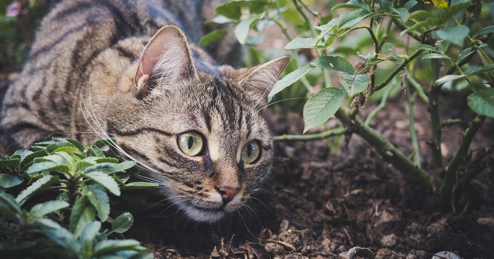

Reunimos aqui as dúvidas mais pontuais sobre coleira GPS para pet que não se aprofundam o suficiente para virar um guia próprio, mas que aparecem com frequência antes da compra.
Modelos bem escolhidos, com peso adequado ao porte do animal — existem opções de 8 a 9,3 gramas para portes pequenos — costumam ser bem tolerados. O incômodo geralmente vem de dispositivo pesado demais para o tamanho do pet, não da tecnologia em si.
veja o guia de peso para cães pequenos
Varia bastante por modelo e modo de uso. Alguns modelos para gato relatam autonomia de 2 a 14 dias, dependendo da frequência de atualização configurada (Patas da Casa, retrieved 2026-08-22). Em modo de rastreamento rápido, a autonomia cai — há relatos de bateria durando cerca de um dia nesse modo (SecSystem, retrieved 2026-08-22).
Muitos modelos atuais têm proteção IP68, suficiente para chuva e imersão rápida, mas vale confirmar essa especificação no anúncio antes de comprar — nem todo modelo tem esse selo.
Depende do modelo. Coleiras com chip de operadora costumam exigir plano de dados mensal; já modelos Bluetooth ou baseados em redes de baixo consumo (NB-IoT) podem funcionar sem cobrança recorrente.
veja como identificar modelos sem mensalidade
compare bluetooth com chip de operadora em detalhe
Não garantidamente. Modelos com chip dependem de cobertura de rede móvel da operadora na região; em áreas rurais muito isoladas, o sinal pode falhar. Modelos Bluetooth dependem do celular do tutor estar por perto.
entenda também a diferença para o microchip de identificação
A maior parte das dúvidas sobre coleira GPS gira em torno de expectativa realista: bateria, sinal e resistência variam por modelo, e checar a ficha técnica específica do produto antes de comprar evita boa parte das frustrações.
volte ao guia completo de coleira GPS para pet
Escrito pela Equipe Smart Pet Gadgets, redação especializada em comparativos de produtos pet no mercado brasileiro. Veja nossa política editorial e como verificamos as fontes citadas neste artigo.
🐾 Confira o preço e a disponibilidade atual no Mercado Livre.
Ver no Mercado Livre →Link de afiliado: podemos receber uma comissão por compras feitas através deste link, sem custo adicional para você.
Modelos bem escolhidos, com peso adequado ao porte do animal (existem opções de 8 a 9,3 gramas para portes pequenos), costumam ser bem tolerados. O incômodo geralmente vem de dispositivo pesado demais para o tamanho do pet, não da tecnologia em si.
Varia bastante por modelo e modo de uso: alguns modelos para gato relatam de 2 a 14 dias, dependendo da frequência de atualização configurada. Em modo de rastreamento rápido, a autonomia cai — há relatos de bateria durando cerca de um dia nesse modo.
Muitos modelos atuais têm proteção IP68, que suporta chuva e imersão rápida, mas vale confirmar essa especificação no anúncio antes de comprar, pois nem todo modelo tem esse selo.
Depende do modelo. Coleiras com chip de operadora costumam exigir plano de dados mensal; já modelos Bluetooth ou baseados em redes de baixo consumo (NB-IoT) podem funcionar sem cobrança recorrente.
Não garantidamente. Modelos com chip dependem de cobertura de rede móvel da operadora na região; em áreas rurais muito isoladas, o sinal pode falhar. Modelos Bluetooth dependem do celular do tutor estar por perto.
Nildo Alves — curadoria de produtos pet no Smart Pet Gadgets. Testa e pesquisa produtos para cães e gatos, cruzando especificações de fabricante com boas práticas veterinárias e dados de mercado.
Sobre o Smart Pet Gadgets · Contato · Política editorial e de afiliados